Quickstart - Visite Virtuelle
1. Interface
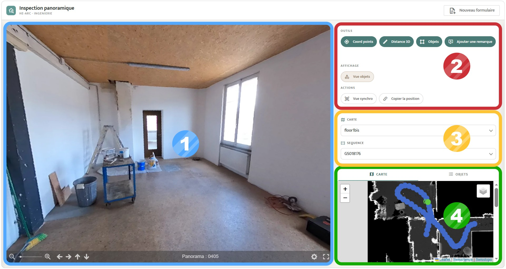
① Vue panoramique
Cette fenêtre permet de voir et d'interagir avec une image panoramique.
② Outils et actions
Elle permet de sélectionner un outil pour interagir avec les images. Les différents outils sont présentés ultérieurement
③ Filtrage et changement de carte
Cette fenêtre permet de choisir la zone de la friche que l’on souhaite visiter. Il est possible de filtrer les images pour faciliter la visite
④ Carte du site
La carte permet de voir la zone à visiter en affichant les points de vues panorqmiques consultables sur un plan du site.
2. Déplacements
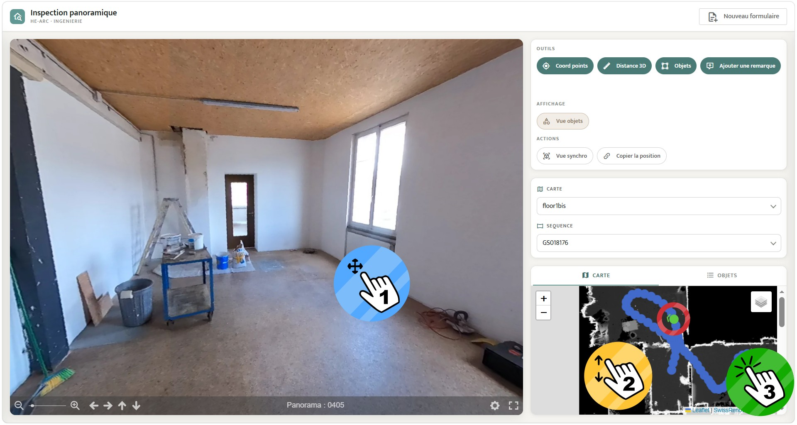
① Tourner dans la panoramique
Pour pivoter dans l'image, cliquer-glisser sur l'image et utiliser la molette pour ajuster le zoom.
② Se déplacer sur la carte
La carte est intéractive, il est possible de se déplacer sur la carte et de zoomer. Chaque panoramique consultable est représentée par un point bleu. Il suffit de cliquer sur un point bleu pour ouvrir la panoramiques dans la Vue panoramique. La panoramique affichée est alors représentée par un point vert avec une flèche sur la carte. La flèche indique la direction dans laquelle on regarde sur la panoramique.
③ Changer de panoramique
Pour changer de point de vue panoramique, il suffit de cliquer sur un point bleu de la carte.
3. Outils de base
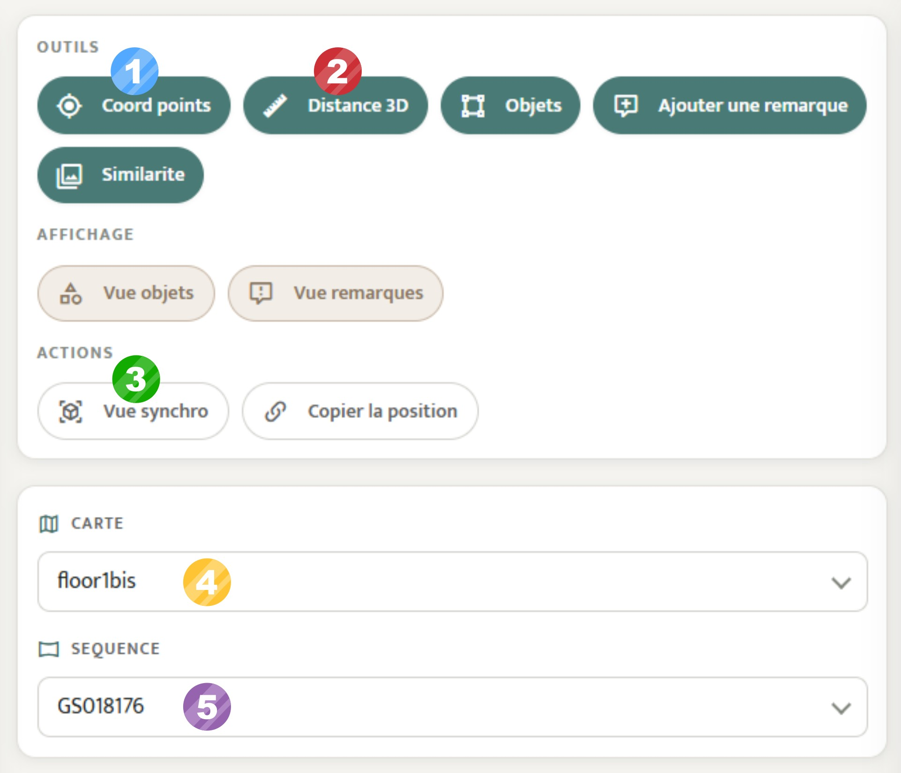
① Coordonnées d'un point
L’outil Coord points permet de cliquer un point dans l’image pour obtenir ses coordonnées dans le système Suisse (EPSG : 2056).
② Mesurer une distance
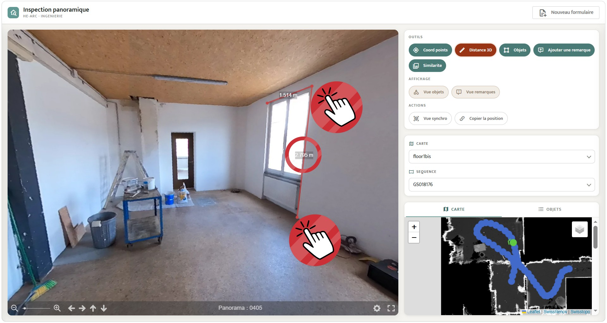
L’outil Distance permet de cliquer plusieurs points pour tracer une ligne ou polyligne. Chaque segment d’une polyligne est accompagné d’une distance en mètre.
③ Vue synchronisée
La Vue synchronisée permet de passer sur le viewer Potree avec de la 3D en conservant le point de vue actuel.
④ Changer de carte
Une friche peut se décomposer en plusieurs zones et étages qui ne peuvent pas être représenté sur une seul carte. Le menu déroulant affiche la liste des cartes disponibles. Une fois sélectionné, la fenêtre **carte se mets à jour.
⑤ Filtrer les panoramiques
Certaines cartes contiennent beaucoup de panoramiques, il est possible de les filtrer par séquence d'acquisition pour s'y retrouver.
D’autres filtres de sélection peuvent être ajoutés dans le développement de ce viewer pour améliorer la recherche. (exemple : date, attribut, ré-échantillonnage … etc)
4. Outils de saisie
Les outils de saisie permettent d'annoter des informations sur les images, de les consulter et de les supprimer.
① Saisir une remarque
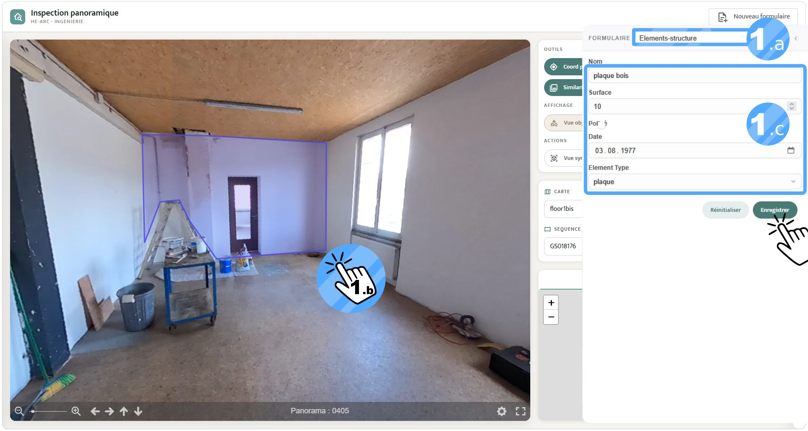
Cliquer sur l'outil Ajouter une remarque, un paneau s'ouvre sur la droite. Il est possible de réduire ou développer ce panneau avec la flêche en haut à droite de ce panneau.
- a. Choisir un Formulaire : Une liste de formulaires s'affiche en cliquant sur le menu déroulant. Une fois le formulaire sélectionné, il s'affiche dans le panneau.
- b. Détourer un objet : Dans la Vue panoramique, détourer un objet en cliquant sur l'image.
- c. Remplir le formulaire : Remplir le formulaire dans le panneau avec des informations. Une fois terminé, cliquer sur Enregistrer.
② Saisir un objet
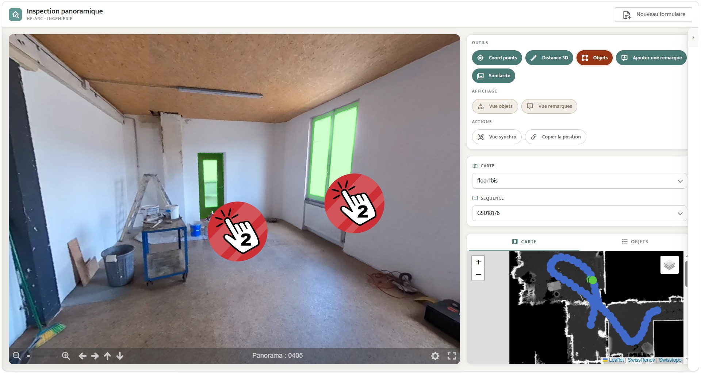
La saisie d'un objet se déroule comme la saisie d'une remarque à une subtilité pret. Cliquer sur l'outil Objet, le même panneau avec formulaire s'ouvre. La différence se trouve pendant le détourage d'un objet dans l'image. Il suffit de cliquer sur un objet et celui-ci est détouré automatiquement. S'il n'y a qu'une partie de l'objet à être détouré, il suffit de cliquer à nouveau sur la partie manquante. Pour désélectionner un objet, faire un clique droit sur celui-ci.
③ Afficher des annotations
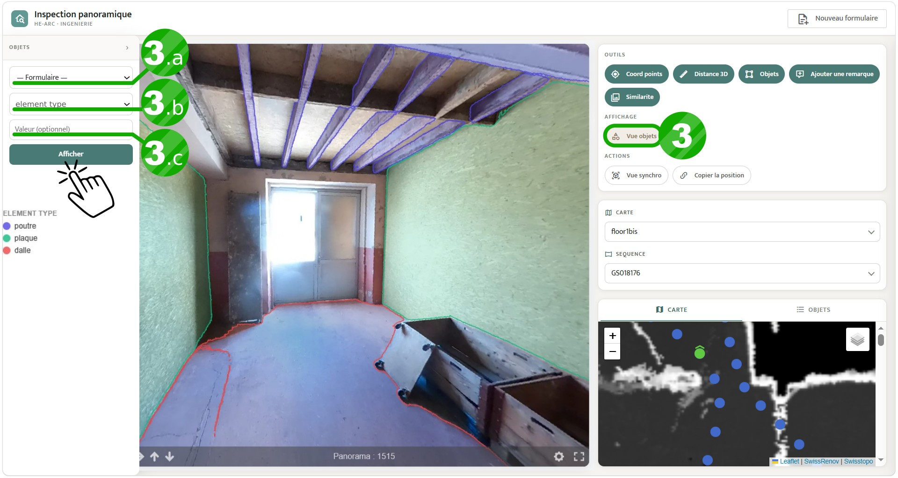
Cliquer sur l'outil Vue objet, un panneau s'ouvre sur la gauche. Il est possible de réduire ou développer ce panneau avec la flêche en haut à droite de ce panneau.
- a. Choisir le formulaire : Une liste de formulaires s'affiche en cliquant sur le menu déroulant.
- b. Choisir un champs : La liste des champs du formulaire sélectionné s'affiche. Une fois le champs choisis, cliquer sur Afficher pour que les annotations apparaissent sur l'image panoramique.
- c. Choisir une valeur (optionnel) : Si seulement une valeur spécifique vous intéresse, remplir la valeur puis cliquer sur Afficher. Seul les annotations avec cette valeur spécifique s'affichent alors sur l'image panoramique.
④ Supprimer des annotations
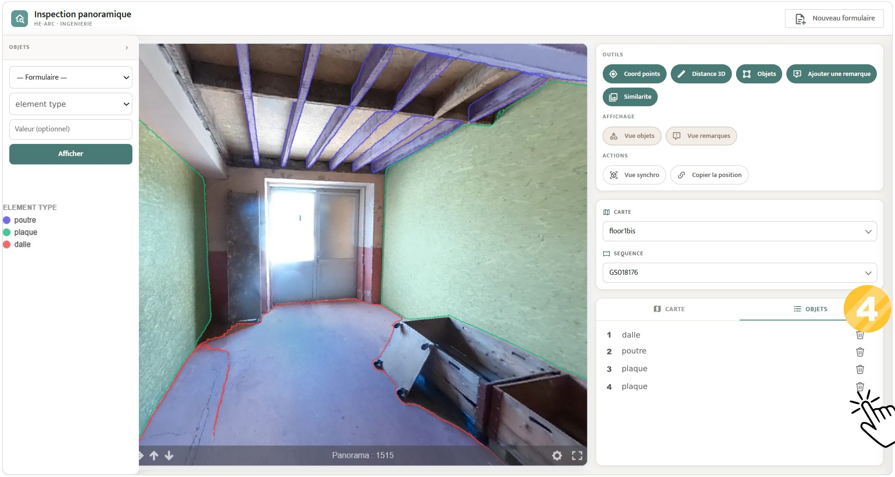
Lorsque des annotations sont affichées sur une images panoramique, il est possible de voir la liste des annotations dans l'onglet Objets dans la fenêtre de la Carte. Sur cette liste apparait un icon de corbeille pour supprimer une annotation.
5. Affichage complémentaire
① Affichage sur la panoramique
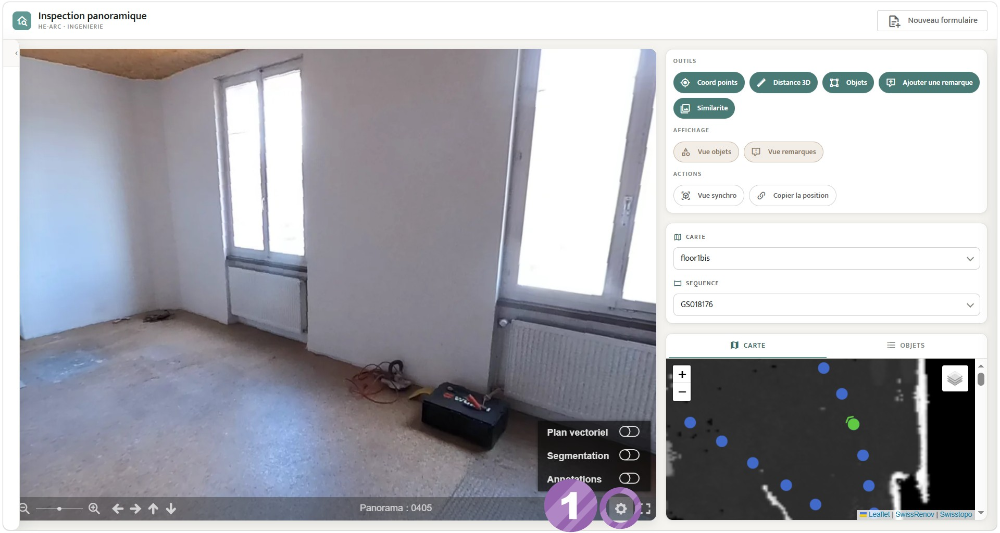
Dans la Vue panoramique, il est possible d’ajouter des informations complémentaires associées à l’image panoramique.
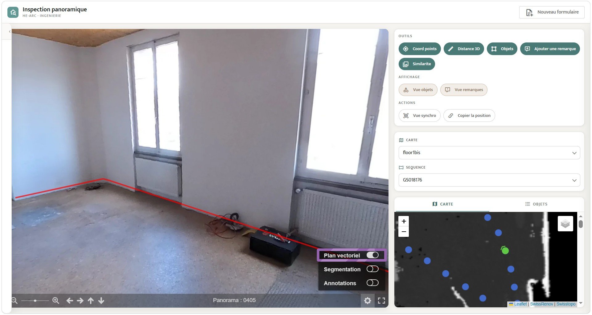
Plan Vectoriel : Un plan (dxf ou geojson) qui décrit des éléments de la friche comme des contours de murs, peut être superposé à un point de vue. Cela permet de mieux évaluer les surfaces au sol, d’afficher des informations complémentaires ou des projections de réaménagement.
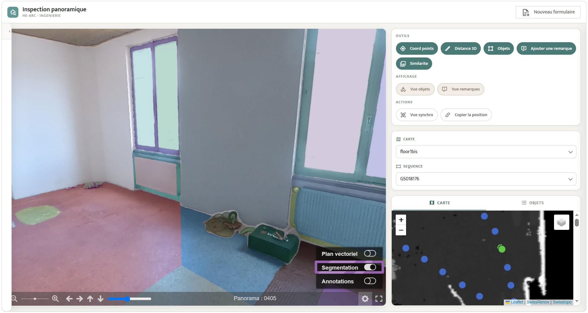
Segmentation : Les différents objets et éléments de l’image sont découpés automatiquement pour les distinguer. Cette visualisation permet de voir l’ensemble des éléments. Certaines découpes droites ne correspondent pas à des objets, il s’agit d'artefacts liés au calcul automatique. Cela provoque des découpes supplémentaires dans un même objet.
② Affichage sur la carte
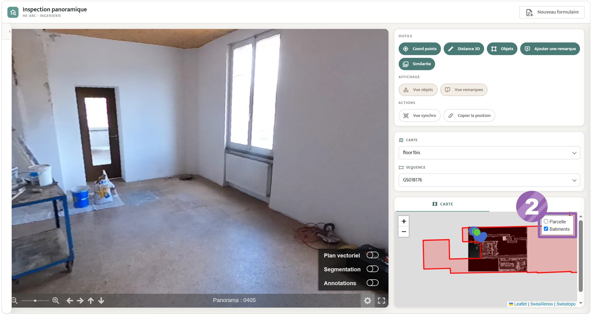
Sur la Carte, il est possible d’afficher différentes informations supplémentaires. Dans l'onglet en haut à droite, des informations issues de Swisstopo permettent de mieux comprendre le site et les éléments qui l'entourent
Les informations affichées se limitent pour le moment aux contours de la parcelle et du bâtiment. Cela peut être enrichi avec d’autres informations et/ou sources
6. Outils d'export
Warning
Système en cours de développement